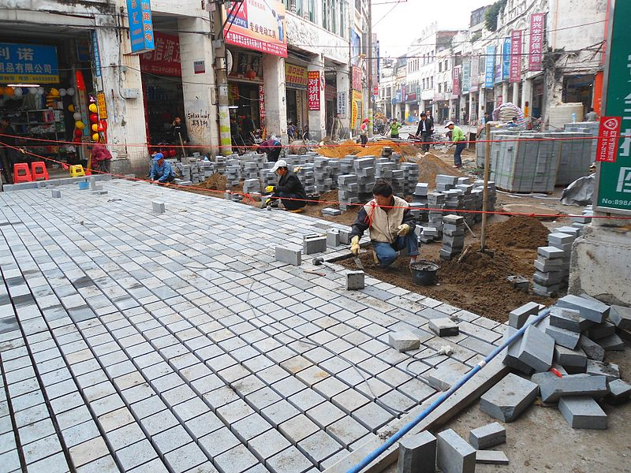
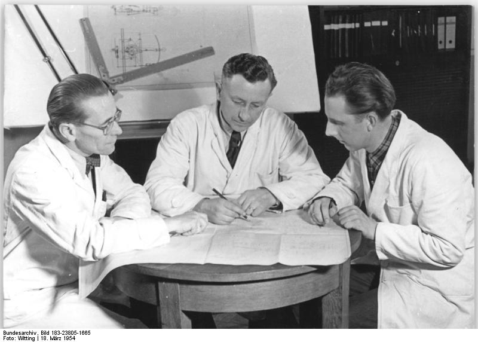
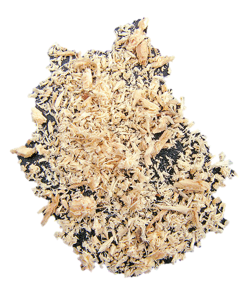

Chapter 3
What Economies Do
19 slides
Contents · 19 slides
- What Economies Do
- Resource maintenance
- Natural Capital
- Manufactured Capital
- Human Capital
- Social Capital
- Financial Capital
- Investment
- Production of goods and services
- Production
- Inputs
- Outputs
- Waste Products
- Distribution of goods and services
- Exchange
- Transfer
- Consumption of goods and services
- Saving
- Discussion
2 Resource maintenance

- Management of capital stocks so that their productivity is sustained
4 Manufactured Capital

5 Human Capital

6 Social Capital

7 Financial Capital

- Funds of purchasing power that facilitate economic growth
8 Investment

- Actions taken now for benefits in the future
9 Production of goods and services

10 Production

- Conversion of resources to goods and services
12 Outputs

13 Waste Products

14 Distribution of goods and services

16 Transfer
- The giving of something with nothing specific expected in return
17 Consumption of goods and services

19 Discussion
- Think of some activity you enjoy. What natural, manufactured, human, and social capital does it employ?